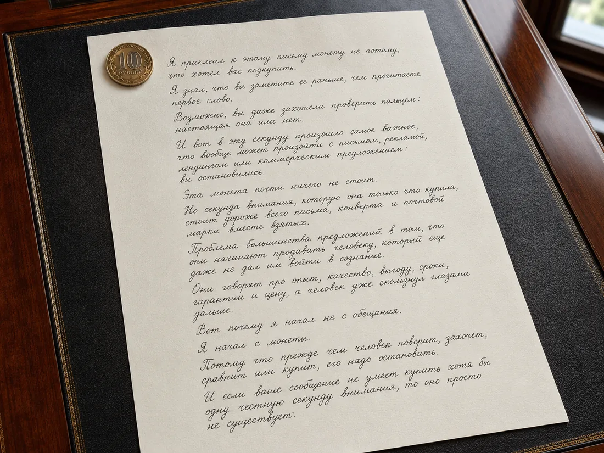
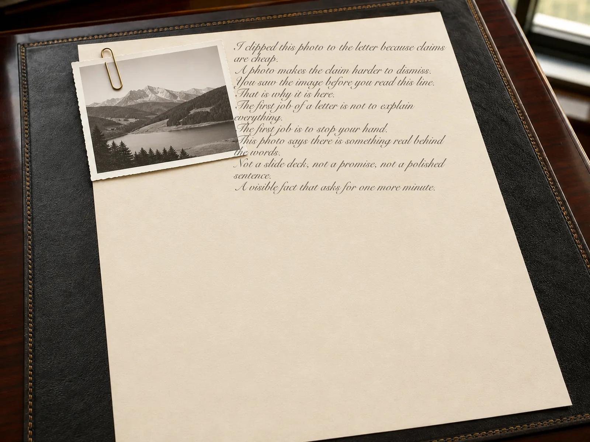
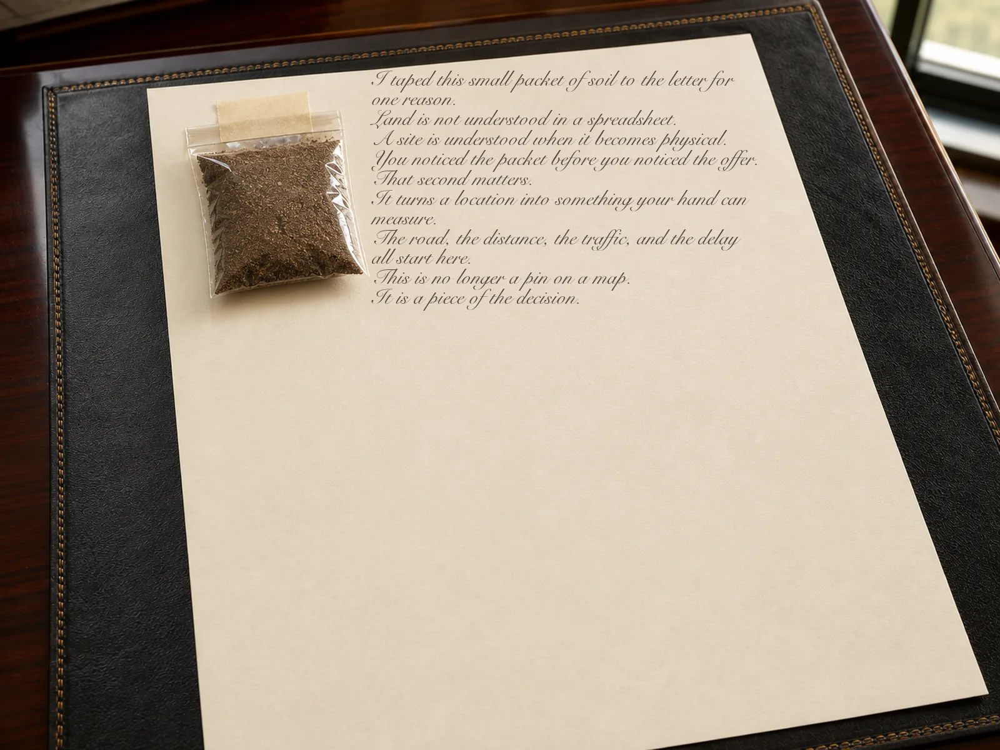
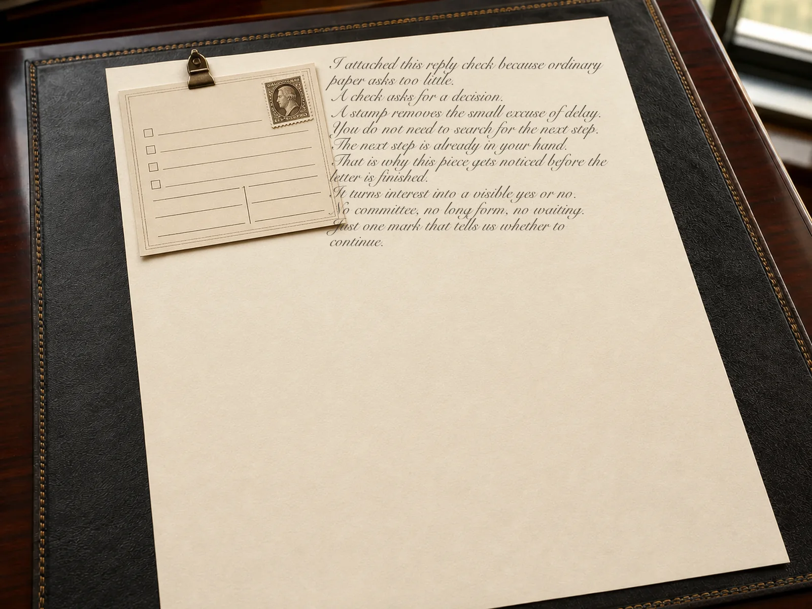
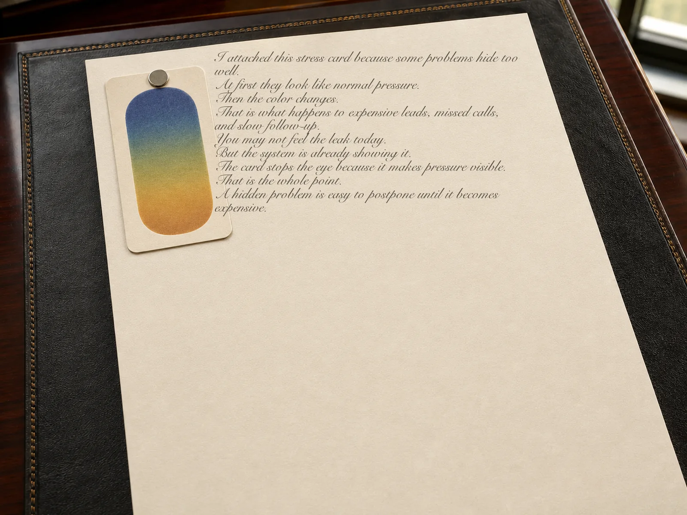
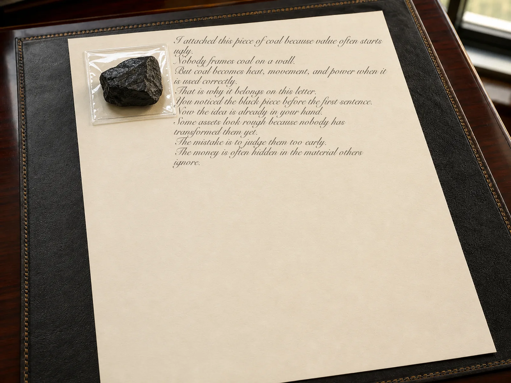
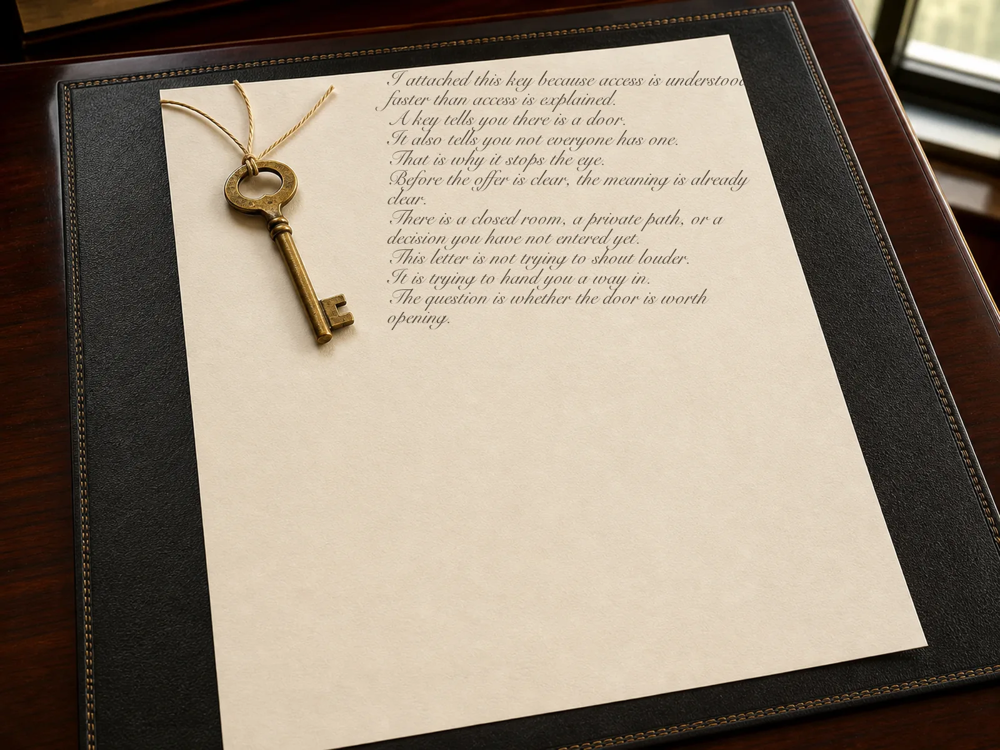
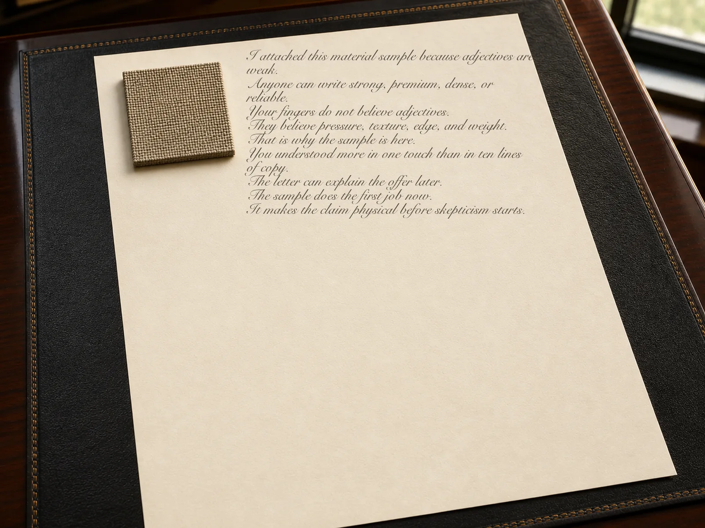
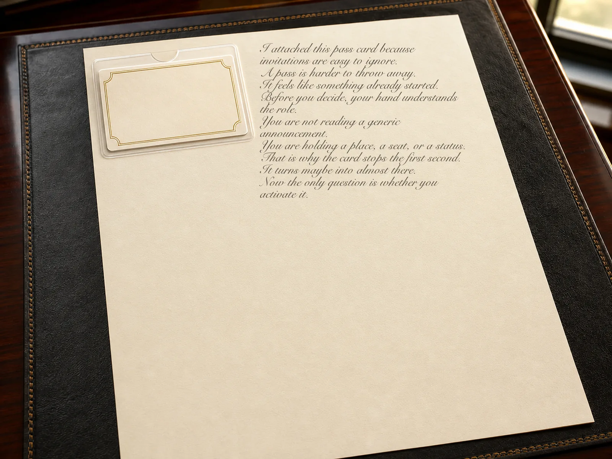
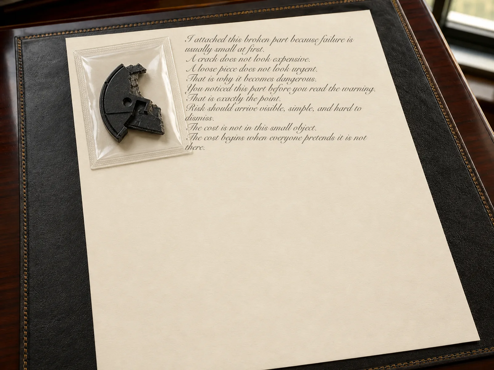

Hemos enviado más de 1.000.000
cartas y paquetes que se notan, se leen y se recuerdan.
Ponemos la oferta correcta en manos de la persona correcta.
Se detienen. Lo abren. Lo leen. Recuerdan quién lo envió. A veces responden.
Creado para conseguir la siguiente conversación.
Una carta funciona solo si llega a la persona que puede decir "sí".
Por eso el trabajo empieza antes del texto y de la producción.
Primero elegimos las empresas donde la oferta puede tener sentido.
Una marca, una entidad jurídica, una matriz, una filial, un nombre anterior y una oficina regional pueden referirse al mismo negocio.
Relacionamos esos registros y eliminamos duplicados y empresas inactivas. El resultado es una lista limpia donde merece la pena invertir presupuesto.
Después encontramos a la persona que puede tomar la decisión.
Un cargo no basta: buscamos a quien responde por el problema, controla el presupuesto, influye en la elección o puede llevar la propuesta a decisión.
Así la carta llega a quien puede actuar, no a un buzón general.
Una empresa y un cargo todavía no son una ruta de entrega.
Las personas cambian de trabajo, las oficinas se mudan y los directorios envejecen. Antes de producir, contrastamos la persona, el cargo, la ubicación y la dirección postal en varias fuentes.
Descartamos registros contradictorios, duplicados o antiguos. Si no hay certeza de entrega, no enviamos la carta.
Solo entonces escribimos la carta física.
Con empresa, persona y dirección confirmadas, elegimos el ángulo, la oferta, las pruebas y un siguiente paso claro.
Es una carta para este destinatario y esta decisión. Una persona la revisa antes de producir.
Aquí el objeto empieza a hacer su trabajo.
Un objeto llamativo no es decoración: refuerza la primera frase, vuelve físico el problema o aclara la oferta antes de leer la carta.
Los objetos cambian; la regla no: cada uno lleva parte del argumento.
El objeto debe demostrar la idea.
La moneda, la fotografía, la llave o la pieza rota nunca son el objetivo por sí mismos. Lo importante es lo que hacen imposible ignorar.
Moneda o billete
Para cartas sobre dinero, beneficio, ahorro, coste del error,
inversiones, encuestas, invitaciones y la primera conversacion.
El dinero en la mano trabaja mas que la palabra "dinero" en una pagina.
Una moneda fija el tema al instante: aqui se habla de dinero real,
no de una abstraccion. Un billete puede comprar honestamente los primeros
dos minutos de atencion si despues hay una oferta fuerte.
Un billete antiguo o una moneda inusual funcionan especialmente bien
cuando se habla de inflacion, devaluacion, memoria financiera,
rareza, una solucion no convencional o el coste de demorar.

Fotografía
Para demostrar algo: una propiedad, almacen, terreno, fila, producto,
estante vacio, documento, persona o situacion real.
Una fotografia sirve donde seria facil no creer las palabras.
Dice: esto existe. No es una maqueta. No es una promesa. No es una
historia pulida de una presentacion.
Para un producto complejo, una vista general suele ser menos util que
un detalle preciso: una costura, union, borde, material, embalaje,
acabado, defecto o resultado.

Arena o tierra
Para tierra, playa, resort, construccion, parcela, almacen, zona industrial,
infraestructura y cualquier proyecto donde lo principal sea el lugar.
La carta pone una pequena parte del lugar en manos del destinatario.
La parcela deja de ser una linea en un PDF. La playa deja de ser una
imagen. La obra deja de ser una promesa.
El acceso, los vecinos, el flujo de personas, el futuro proyecto, la ruta
y el valor del suelo pasan a sentirse como contexto fisico.

Tarjeta de respuesta o cuestionario
Para cartas que requieren respuesta: calificacion, encuesta, senal de interes,
solicitud, acuerdo para conversar o motivo para un segundo contacto.
Una respuesta prefranqueada elimina un paso. El destinatario no tiene que
averiguar como contestar.
Un cuestionario trabaja aun mas: hay una accion que completar. Es dificil
percibirlo como papel ordinario.
Cuando una persona devuelve el formulario, cuestionario o una respuesta breve,
recibe una senal clara: lo noto, lo entendio y actuo.
Y casi seguro recordara quien hizo la pregunta.

Aspirina o tarjeta de estres
Para cartas que empiezan por un dolor concreto: leads caros, ventas vacias,
deuda, sobrecarga, retrasos, publicidad que quema presupuesto,
errores de produccion o solicitudes perdidas.
La pastilla no resuelve el problema, pero nombra el dolor de inmediato.
El destinatario entiende el tema antes de leer: se trata de un dolor de cabeza
concreto.
Una tarjeta de estres hace lo mismo de otra manera. Convierte la conversacion
sobre presion en una pequena prueba fisica.

Pluma o trozo de carbon
Para contrastar el metodo antiguo con el nuevo, o para hablar de valor oculto.
Una pluma muestra una herramienta que antes era normal y ahora es demasiado lenta.
El carbon muestra materia prima antes de transformarse. Parece una pieza
rugosa, negra y sin interes. Pero contiene valor.
Este objeto funciona bien en cartas sobre cambio, renovacion, modernizacion,
revaloracion de activos antiguos y oportunidades que aun parecen poco atractivas.

Llave
Para acceso, oportunidad cerrada, inmuebles, negociaciones, entrada a la persona
correcta, una oferta privada o un grupo limitado de participantes.
Una llave no abre nada por si sola.
Pero fija el significado al instante: hay una puerta, hay acceso, hay algo
a lo que no entra todo el mundo.
En una carta, la llave dice: esto no es un envio masivo, es una invitacion
a entrar por una puerta concreta.

Muestra de material o fragmento de mapa
Para fabricacion, construccion, acabados, embalaje, muebles, equipos,
ubicaciones, rutas y logistica.
Es mejor tocar un material que describirlo.
Se puede escribir sin limite "denso", "caro", "fiable" o
"agradable al tacto". Una muestra real resuelve esa duda mas rapido.
Un fragmento de mapa funciona cuando lo importante es el lugar, el movimiento,
la ruta, el radio de entrega, el flujo de personas o la proximidad a un punto.
El mapa obliga al destinatario a ver la situacion.

Entrada, tarjeta plastica o tarjeta en blanco
Para reuniones privadas, presentaciones, clubes, acceso, una oferta premium,
una eleccion o una respuesta personal.
Una entrada convierte la invitacion en un objeto.
Una tarjeta plastica da sentido de pertenencia antes de activarse.
La persona no sostiene una descripcion, sino un pase casi listo.
Una tarjeta en blanco muestra espacio libre: para un nombre, decision,
firma, eleccion o estado.
A veces un espacio vacio pide una decision con mas fuerza que otro parrafo.

Pieza rota
Para cartas sobre reparacion, reemplazo, seguros, calidad,
produccion, seguridad, errores y el coste de una parada.
Una cosa rota a veces es mas potente que una imagen bonita.
Muestra el riesgo.
Inclui esta pieza rota por una razon.
Los gastos grandes empiezan con cosas pequenas como esta.
Primero una grieta. Luego una parada. Despues una reparacion urgente.
Y despues las personas explican por que nadie vio el problema antes.
En cartas sobre calidad, seguridad y perdidas, una pieza rota hace lo principal:
elimina la abstraccion.
El error ya no esta en el informe. El error esta sobre la mesa.

La carta, el objeto y la entrega son una sola cosa.
Un objeto interesante no ayuda si esta puesto sin sentido, se rompe en el camino o arruina la impresion. La carta, el objeto, la primera frase y la oferta deben funcionar como una sola pieza.
Colocamos el objeto donde refuerza la primera frase y ayuda a entender la oferta al instante. Cada pieza se ensambla para una persona concreta y se revisa: posicion, legibilidad, sujecion y resistencia durante el envio.
Elegimos el sobre, embalaje, proteccion, etiquetado y franqueo alrededor de la pieza terminada. Debe llegar limpia, segura y tal como el lector debe verla.
Para envios normales elegimos el servicio postal adecuado. Para los prioritarios, seguimiento, correo certificado, confirmacion de firma, entrega restringida o mensajero a nombre del destinatario.
Consideramos el trabajo terminado cuando la entrega queda confirmada y registrada.
Empiece con un producto, un mercado y una decision.
Cuentenos que vende, donde quiere venderlo y que accion espera del destinatario. Le mostraremos la ruta completa de la campana antes de producir.
Encontramos la ruta.
Estudiamos el mercado, elegimos empresas y personas, y comprobamos donde puede llegar el correo fisico.
Ve la campana antes de que se mueva.
Mostramos audiencia, idea, oferta, carta, objeto y plan de entrega. La produccion comienza despues de su aprobacion.
Lo producimos y entregamos.
Montamos el envio, elegimos el servicio adecuado y registramos el resultado de la entrega.
No es una lista. Es una ruta directa a una persona.
La empresa correcta.La persona que puede decidir.Una direccion verificada.Una carta escrita para ella.Un objeto que refuerza el mensaje.Un envio con entrega controlada.
Cada etapa elimina una forma facil de fallar. Su oferta llega a la persona que puede considerarla y responder.